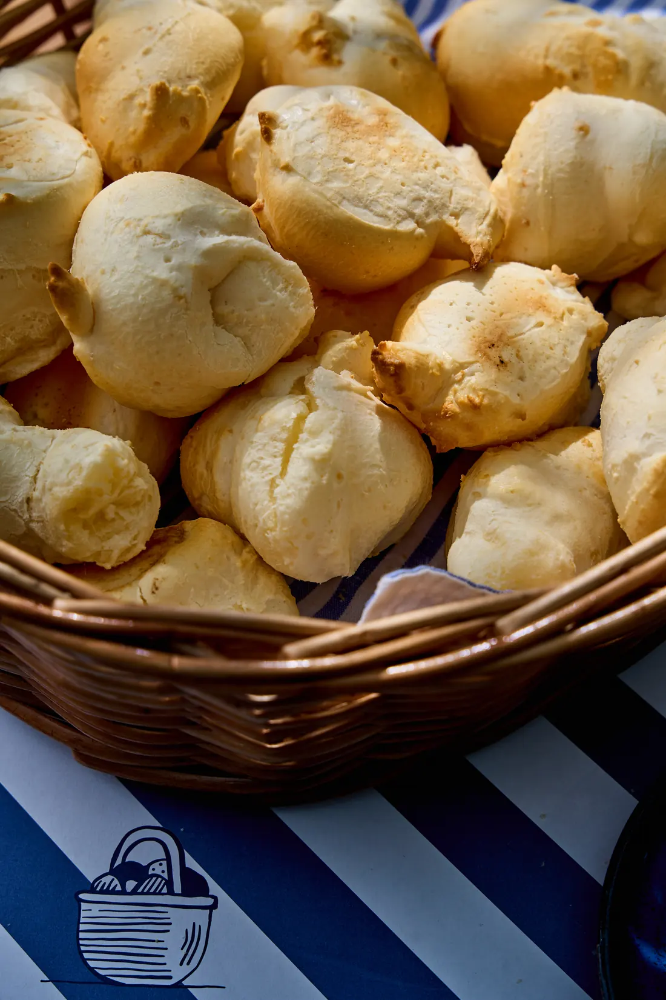

DESDE 1968, BOAS PAUSAS
O CLÁSSICO.
TODO DIA.
Fotografia imersiva, identidade do manual e uma pausa com história.
Ver a direçãopode chegar. a pausa é sua.O minimalismo encontra o movimento da própria marca.
As cores da casa.
#13273D
#EEECE8
#9F2B34
Uma segunda impressão.
DIN monumental e Poppins funcional. Nos menus, cada grafema troca de impressão com acentos íntegros; filetes duplos lembram a embalagem. A tinta dos botões nasce no ponto do mouse e cobre até o último canto, com contraste durante entrada e retorno. Filetes animados não deslocam links vizinhos; botões sem setas.
Uma pausa em três cenas.
Cesta, café e mesa: fotos reais com dissolução de 1,6 segundo. A imagem anterior continua opaca sob a nova e conserva seu zoom até o fim. Textos e caminhos de ação permanecem estáveis.
Desdobrar, não repetir.
Fotos abaixo da dobra se abrem em cinco faixas; títulos saem de máscaras tipográficas com folga para Á, Ê, Ç e Ã. Trocas de página usam dissolução curta, sem recortar a página inteira ou mover o menu. Primeiro conteúdo das internas permanece visível.
Cuidados.
Hero 100vh × 100vw com altura segura no celular. Cabeçalho com a mesma geometria em todas as páginas, transparente sobre a Home e legível fora dela. Retomar funciona com foco no botão; cliques rápidos e histórico preservam a escolha. Movimento reduzido, teclado, conteúdo sem JavaScript e revisão comercial antes de publicar.
Abrir a implementação interativa localEste arquivo demonstra o DS estático. Interações e testes estão no site compilado.